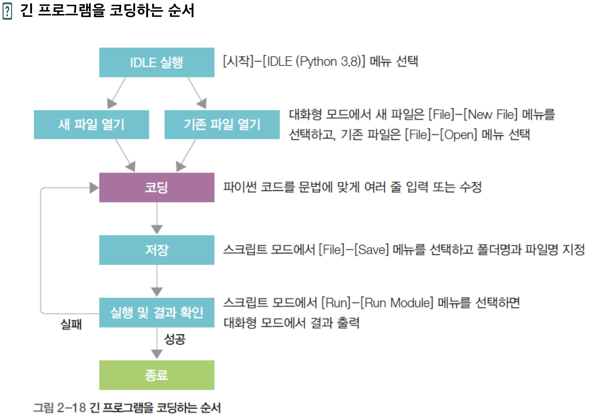

- 파이썬 환경설정 및 실행
-
아나콘다로 파이썬을 배워보자
https://www.anaconda.com/products/individual
Q : 왜 아나콘다로 배우는가? -
글씨체 설정
- 숫자0 과 영어 O와 같이 비슷한 형상을 쉽게 구분하기 위해 글씨체를 변경해두면 유용하다.
- 아나콘다 설치 후 Anaconda Prompt(CMD) 창을 연다.
- idle 입력 후 엔터
- 커맨드 실행환경이 뜬다.
- option -> configure idle 클릭
- settings 창이 뜬다.
- shell/editor font 란에서 font Face(글씨체)를 consolas 로 바꾸는걸 강추.
- 밑에 Size란에서 글씨 크기 조절가능하다.
-
아나콘다 실행 및 코딩
- 아나콘다 설치 후 Anaconda Prompt(CMD) 창을 연다.
- CMD 커맨드 창에 idle 입력 후 엔터
- shell(대화형모드)가 나타난다
- file -> new file-> save as-> 저장 폴더 지정 및 파일명 지정
- 이렇게 하면 창이 2개가 생성되어 있을 것이다.
- 그 중에 나중에 생성된 스크립트모드창에서
- 코딩, 저장, 실행 및 결과 확인을 할 수 있다.
- 실행 및 결과 확인은 F5번([run]-[run module]메뉴에서 가능)
- 이렇게 하면 대화형모드에 결과가 출력된다.
- 요약하면 
-
파이썬 언어
-
컴파일러 언어와 스크립트(인터프리터)언어 비교
- 컴파일러 언어란 소스 코드를 실행 가능한 기계어로 일괄 번역한 후 번역이 완료된 파일을 실행하는 언어.
- 소스코드를 기계어로 번역하는 과정을 컴파일, 이 작업을 하는 프로그램을 컴파일러.
- 컴파일러 언어 종류 : C, java? 등
- 컴파일러 언어는 실행속도 빠름. 반면 사용자가 배우는데 오래 걸림.
- 스크립트 언어는 소스 코드를 한 줄씩 읽어 실행.
- 스크립트 언어 종류 : 파이썬, 자바스크립트, 펄 등
- 스크립트 언어 실행 속도 느림. 반면 사용자가 빠르게 배울 수 있음.
-
자바와 파이썬 비교
- 자바에는 public class 와 같이 전형적인 구조가 있다.
- 파이썬은 비교적 자유로워 배우기 쉽다.
-
파이썬 2.x버젼과 3.x버젼
- 파이썬은 2.x버젼과 3.x버젼이 서로 호환되지 않는다.
- 따라서 기존 2.x버젼에 작성된 파이썬 코드들은 3.x버젼으로 일괄 수정하기 어려움.
- 파이썬 3.8.6 버젼이 있다고 하면 3은 major에 해당하여 큰 업데이트, 8은 minor에 해당하여 비교적 적은 업데이트, 6은 업데이트 횟수이다.
-
파이썬 함수와 변수 이해
-
함수
- 기본적으로 함수 뒤에는 ()를 포함한다.(문법이라고 생각하자)
- 함수에는 여러가지 종류가 있다. inptu(), int(), print() 등등등등등
- 따라서 사용법은
- https://docs.python.org/3/
- 에서 함수명과 그 사용법을 검색하여 읽어보고 활용하여야 한다.
-
input()함수
- 인풋함수는 사용자가 값을 입력할 수 있게 해주는 함수이다.
- 인풋함수로 입력되는 값은 모두 문자이다.(숫자값을 입력해도 문자열로 받아들인다.)
-
int()함수
- 모든 데이터값을 정수형으로 변환해주는 함수.
- a=int(input()) 라는 a형 변수를 생성하면
- 문자열 값 intput함수가 int함수로 인하여 a변수에 정수형으로 저장된다.
-
print()함수
- 결과창에 값을 출력하여 주는 함수
-
내부함수, lambda
-
map
-
yield 예약어
-
플러스(+) 의 2가지 기능
- Q : print(1 + 1)의 출력값은 무엇일까?
- A : 2 (숫자 덧셈기능)
- 위의 1은 숫자 1이라는 데이터값이어서 숫자덧셈이 가능하다. 하지만
- Q : print('1'+'1')
- A : 11 (문자 결합기능)
- 위의 '1'은 문자 1이라는 데이터값이므로 문자간의 결합기능이 수행된다.
- Q : print('1'+'1')
- A : 1+1 (이 경우는 +기호 마저 문자 데이터값이므로 그대로 출력된다.)
-
플러스(+)의 문자 결합기능과 구분기호(,) 비교
- Q : print('1'+'1')
- A : 11
- 플러스의 문자 결합기능에는 공백이 생기지 않는다.
- Q : print('1','1')
- A : 1 1
- 구분기호(,) 사이에는 공백이 생긴다.
-
type()
- 해당 값의 데이터형을 알려주는 함수
- print(type()) 으로 활용하면 결과창에서 쉽게 데이터형을 확인할 수 있다.
- 변수가 bool(불형), int(정수), float(실수), str(문자열)형으로 생성됨
-
주석
- # 한줄짜리 주석
- '''
- 작은따옴표 위 아래로 3개씩 사이는 문장 주석이 된다.
- '''
-
함수 선언
-
거북이 프로그램 복습 및 응용
-
긴 프로그램은 변수 선언부분, 함수선언부분, 메인코드 부분 세가지로 나누어서 코딩하면 좋다
-
print()함수를 사용한 다양한 출력1
-
print()함수를 사용한 다양한 출력2
-
print()함수를 사용한 깔끔한 출력1
-
print()함수를 사용한 깔끔한 출력2
- print(r"\n \t \" \\ 를 그대로 출력")하는 줄에서 r역할에 신경쓰자.
-
변수명 규칙
- 대소문자를 구분한다.
- 문자, 숫자, 언더바를 포함할 수 있다. 하지만 숫자로 시작하면 안 된다.
- 예약어는 변수명으로 쓰면 안 된다.
- 파이썬의 예약어는 True, False, None, and, or, not, break, continue, return, if 등등
-
변수의 사용
- 변수에는 변수의 값 넣을수 있고, 계산 결과를 넣을 수도 있음.
- 변수에는 숫자와 변수의 연산을 넣을 수도 있음.
- 변수에 연속된 값을 대입하는 방식 var1= var2= 100에서 var2, var1순으로 모두 100값이 저장됨
- 변수에 연산 결과를 자신의 값으로 다시 대입하는 방식 var1 = var1 +200. var1 초기값이 100이라면 300,500,700순으로 증가함
-
데이터 표현 단위와 진수 변환
-
진수 변환
- 2진수 : 0b01
- 8진수 : 0o01234567
- 10진수 : 255
- 16진수 : 0x0123456789abcdef
-
비트와 바이트
- 컴퓨터에서 표현할 수 있는 제일 작은 단위는 비트(Bit)
- 비트 8개가 모이면 바이트(Byte)
-
진수 변환
-
진수 표현 프로그램
-
기본 데이터형 : 숫자형(정수형과 실수형)
- 정수형에는 16진수, 8진수, 2진수도 사용할 수 있다.
- 실수형은 3.14e5=314000.0처럼 소수점이 있는 데이터.
- 숫자형은 사칙 연산 수행 가능
- 제곱을 의미하는 **
- 나머지를 구하는 %
- 나눈 후 소수점 버리는 // 연산자
-
기본 데이터형 : 불형
- 불형은 참이나 거짓만 저장할 수 있다.
- 불형은 비교의 결과를 참이나 거짓으로 저장하는데 사용가능
- True나 False글자의 첫글자는 항상 대문자로 써야한다.
-
기본 데이터형 : 문자열
- 문자 집합을 의미한다.
- "",''로 감싸야한다.
- 문자열 중간에 작은따옴표나 큰따옴표를 출력하고 싶다면 다른 따옴표로 묶어주면 된다.
- 역슬래시(\) 뒤에 큰따옴표나 작은따옴표를 사용해도 글자로 인식한다.
-
기본 데이터형
-
연산자
-
산술 연산자
-
대입 연산자
-
관계 연산자
-
논리 연산자
-
비트 연산자
-
음의보수
-
연산자 우선순위
-
조건문
-
조건문
- if문
- if~else문
- if~else~if~else문 (if if else else형태)
- if~elif~else문 (if elif elif elif else 형태)
- 삼항 연산자
-
if문과 리스트
-
반복문
-
기본 for 반복문
- 범위를 알때 주로 for문을 쓴다.
- 오름차순
- 내림차순
-
for 변수 in [0,1,2]: 내용 -
for i in range(1,6,1): print("%d" %i, end="") -
중첩 for 반복문
-
while문
- 범위를 모를때 주로 while문을 쓴다.
-
break문
- 계속되는 반복을 논리적으로 빠져나가는 방법
- if문을 제외하고 처음 만나는 제어문으로 빠져나간다.
-
continue문
-
리스트
-
리스트 인덱스 개념
- 리스트명 = [ 값1, 값2, 값3, ...] 리스트명[0] 리스트명[1] 리스트명[2]
-
리스트 인덱스 범위잡아 출력하기_콜론(:)
- 리스트끼리 덧셈, 곱셈 연산
- 리스트의 항목 건너뛰며 추출
- 리스트간 대입 가능
- 리스트 인덱스 삭제
- 리스트 조작 함수
- 2차원 리스트
- aa=[[1,2,3,4],[5,6,7,8],[9,10,11,12]]
-
튜플
-
튜플의 생성
- 리스트는 대괄호 []로 생성, 튜플은 소괄호 ()로 생성
- 읽기만 가능해 읽기 전용 자료를 저장할때 사용
- tt1=(1,2,3)
- 튜플 소괄호() 생략가능 항목이 하나인 튜플은 tt5와 tt6처럼 뒤에 쉼표(,) 붙임
- 튜플의 오류
- 튜플의 삭제
- 튜플 항목에 접근
- 튜플 범위에 접근
- 튜플의 덧셈 및 곱셈 연산
- 2차원 튜플
- 튜플->리스트->튜플 변환 (튜플을 수정하는 방법)
-
딕셔너리
- 딕셔너리의 개념
- 쌍 2개가 하나로 묶인 자료구조
- 중괄호 {}로 묶어 구성, 키(Key)와 값(Value)의 쌍으로 구성
- 딕셔너리의 사용
- 딕셔너리 값 호출
- 딕셔너리명.get(키)함수 사용 _해당 값 반환
- 딕셔너리명[키]와 딕셔너리명.get(키)는 결과 같음
- 딕셔너리명[키]는 없는 키 호출하면 오류 나지만 딕셔너리명.get(키)는 없는 키를 호출하면 아무것도 반환하지 않음
- 없는 키를 찾을때 딕셔너리명.get(키)를 사용
- 딕셔너리명.values()함수 사용 _모든 값 반환
- list(딕셔너리명.values())함수 사용 _모든 값 반환
- 딕셔너리 키 호출
- 딕셔너리명.keys()함수 사용 _키 반환
- list(딕셔너리명.keys())함수 사용 _키 반환
- 딕셔너리 키,값 호출
- list(딕셔너리명.items())
- 딕셔너리 True, False
- 딕셔너리 안에 해당 키가 있는지 없는지는 in을 사용해 확인
- 딕셔너리에 키가 있다면 True를 반환하고, 없다면 False를 반환
- 딕셔너리는 순서가 없다. 그렇지만..
- 순서는 없지만 리스트처럼 for문으로 가져와서 반복문으로도 활용 가능
-
리스트,튜플, 딕셔너리 심화내용
-
세트
- 키만 모아놓은 딕셔너리의 특수한 형태
- 딕셔너리의 키는 중복되면 안 되므로 세트에 들어있는 값은 항상 유일
- 세트를 생성할면 딕셔너리처럼 중괄호{}사용하지만 : 없이 값을 입력
- 중복된 키는 자동으로 하나만 남음
- 판매된 물품의 전체 수량이 아닌 종류만 파악하고 싶을 때
- 두 세트 사이의 교집합, 합집합, 차집합, 대칭 차집합 구할 때
- 연산자 &,|,-,^ 대신 함수를 사용
- myset1.intersection(myset2) #교집합 and
- myset1.union(myset2) #합집합 or
- myset1.difference(myset2) #차집합
- myset1.symmetric_difference(myset2) #대칭 차집합 Xor
- 컴프리헨션
- 값이 순차적인 리스트를 한 줄로 만드는 간단한 방법
- 1부터 5까지 저장된 리스트
- 컴프리헨션의 구성
- 리스트=[수식 for 항목 in range() if 조건식]
- 컴프리헨션으로 작성
- 1~10 숫자 중에서 3 배수의 제곱으로만 리스트를 구성
-
동시에 여러 리스트에 접근
- Zip()함수를 사용해 동시에 여러 리스트에 접근
- 두 리스트를 튜플이나 딕셔너리로 짝지을 때 zip() 함수 사용
-
얕은 복사
-
깊은 복사
-
리스트를 이용한 스택 구현
- 스택:한 쪽 끝이 막혀 먼저 들어간 것이 가장 나중에 나오는 형태의 자료구조
- LIFO(last in first out): 가장 나중에 들어간 것이 가장 먼저 나오는 구조
- Top : 자동차 세 대 중 가장 마지막에 들어간 자동차 C다음의 비어있는 위치
- 푸쉬 : 데이터를 넣는것
- 팝(pop):데이터를 빼는것
-
한 쪽이 막힌 주차장을 만들어 리스트로 스택 구현
-
append()함수 사용하여 자동차 한 대 넣어 보자(푸시)
-
자동차 B와 자동차 C도 주차장에 넣기
-
자동차 빼기
-
스택, 큐, 데크
- 스택 : 한쪽 막힘, 입구 출구 모두 양방향 진입
- 큐 : 양쪽 열림, 입구 출구 모두 한 방향 진입
- 데크 : 양쪽 열림, 입구 출구 모두 양방향 진입
-
문자열
-
문자열의 개념
- 리스트 코드와 비교:리스트는 대괄호 []로 묶고 문자열은 작은 따옴표로 묶어 출력
- 더하기(+)기호 사용해 연결. 또 곱하기(*)기호 사용 문자열 반복
- len()함수:리스트나 문자열의 개수를 셀 때 사용
-
문자열 함수의 사용
- .upper() : 전부 대문자
- .lower() : 전부 소문자
- .swapcase() : 대소문자 반대로 변경
- .title() : 첫글자만 대문자
- .count() : 변수 내에 해당 문자가 쓰여진 횟수 세서 숫자로 반환
- .find() : 해당 문자열 인덱스 찾아서 시작 인덱스 번호 반환
- .index() : 인덱스 위치 찾기
- .rindex() :
- .startswith() :시작할때 해당 문자가 포함되어 있는지.
- .endswith() :
- .strip() : 문자열 공백 삭제. 문자열 시작과 끝 앞뒤의 공백만 삭제 혹은 변경
- .rstrip() : 문자열 끝 뒤 공백만 삭제 혹은 변경
- .lstrip() :
- .replcae() :
- .split() : 문자열 분리, 결합하기
- .splitlines():
- .join():
- .map() : 숫자에 따옴표로 처리된 문자열을 따옴표 제거된 숫자로 변환.
- .center() : 문자열 정렬하기, 채우기
- .ljust() : 문자열 정렬하기, 채우기
- .rjust() : 문자열 정렬하기, 채우기
- .zfill() : 문자열 정렬하기, 채우기
- .isdigit() : 10진수면 True로 반환
- .isalpha() : 알파벳이면 True로 반환
- .isalnum() : 글자+숫자면 True로 반환
- .islower() : 대문자면 True로 반환
- .isupper() : 소문자면 True로 반환
- .isspace() : 공백이면 True로 반환
-
함수와 메서드
- 함수 : 단독 사용 가능. ex)len(ss)
- 메서드 : 객체 필요. ss.upper()
-
함수와 모듈
-
함수는 return값 반환해 준다
- 반환값이 여러 개인 함수
- pass 예약어. 함수 body에 아무 내용 없으면 에러 뜨므로 pass입력시 에러 안뜸
-
지역 변수, 전역변수
- 글로벌 예약어
-
함수의 매개변수 전달
- 여러개의 매개변수를 전달하는 방법
- 매개변수에 v1, v2, v3=0처럼 기본값 설정해 놓고 전달하는 방법
- 매개 변수에 (*para) 개수를 지정하지 않고 전달하는 방법
-
모듈의 생성과 사용
- 파이썬에서 제공하는 표준 모듈의 목록을 일부 확인
- 수학 계산 모듈인 math 모듈이 제공하는 함수의 목록 보기
- 패키지(폴더) 안에는 모듈(파일) 안에는 함수가 포함된다.
-
세트
-
윈도 프로그래밍
- 기본 위젯 활용
- PhotoImage()에서는 GIF 파일 확장자만 사용가능하다
- jpg등등의 확장자를 이름 변경으로만 GIF파일로 만들면 프로그램 오류발생 할 수 있다.
- 위젯의 배치와 크기 조절
- 키보드와 마우스 이벤트 처리
- 메뉴와 대화상자
- 리스트 박스
- 목록을 불러오거나 추가, 제거 또는 선택하기 위한 리스트 박스를 생성
- 매개변수로 Listbox가 출력될 window를 넣어줘야 한다.
- 생성한 후 listbox.pack()함수로 Listbox를 window내에 배치
- Listbox.insert()함수와 Listbox.delete()함수로 요소를 추가 및 삭제 할 수 있다.
-
파일 입출력
- 파일 입출력의 기본 ※※※※※※파일 입출력시 주의사항※※※※※※※
- 한글 파일 열람시 inFp = open("C:/Temp/data2.txt", "r", encoding='UTF8') 끝에 encoding='UTF8'을 필수로 입력하자.
- 파일 저장시 인코딩 유형도 ANSI->UTF8로 변경해주자
-
텍스트 파일 입출력
- 텍스트 파일에 있는 모든 행을 다 읽기
- 한번에 모두 읽어 들이기
- with~as문 : inFp.close()함수를 호출하지 않아도 되는 구문
- 한 행씩 출력
- 도스 명령어 type의 구현
- 도스 출력하는 문장
- 파일이 없을 때 오류가 발생하지 않게 하려면 OS.path.exists 형식사용
- 한 행씩 파일에 쓰기
- 파일 복사
- 암호화(ord)와 chr()함수 사용
- 파를 암호화하려고 54028('파')+100=54123)('')으로 저장
- 암호화, 암호화 해석 파일
-
이진 파일 입출력
- 이진 파일의 복사
- RAW 사진 파일의 구성 이해
- 사진 출력: 1.윈도창의 작성(Code11-11)
- 사진 출력: 2.RAW 이미지 출력
- 사진 출력: 3.디스크에 저장된 RAW파일을 메모리(inImage)로 불러옴
- 사진 출력: 4.메모리(inImage)를 윈도창에 출력하는 기능은 displayImage() 함수에 구현
- 사진 출력 : 5. 전체문장
-
파일 입출력의 심화 내용
- 파일 및 디렉터리 다루기 : shutil 모듈
- 파일 및 디렉터리 다루기 : OS 모듈
- 파일 및 디렉터리 다루기 : OS 모듈
- 파일 및 디렉터리 복사
- shutil.copy(소스파일, 타깃파일) 함수 사용
- 복사할 때는 원본 파일이 있어야 하고, 복사하려는 폴더도 있어야 함
- 디렉터리 통째로 복사
- 디렉터리의 생성 및 삭제
- 디렉터리의 생성 : os.mkdir(폴더명)함수 사용
- 디렉터리의 삭제 : shutil.rmtree(폴더 명)함수 사용
- 디렉터리의 목록 모두 보기
- os.walk(폴더)함수 사용
- 2행 : os.walk(폴더) 함수는 현재 폴더명(dirName), 현재 폴더의 하위 디렉터리 목록(subDirList), 파일명 목록(fnames) 반환
- fnames의 개수만큼 반복해서 폴더명과 파일명 묶어 출력
- 경로 설명
- / : 로컬영역의 파일 경로
- \\ : 웹상의 파일경로
- ./ : 현재경로
- ../ : 현재위치를 기준으로 상위 경로
- ../../ : 현재위치를 기준으로 상위 상위 경로?
- 파일 또는 폴더가 이미 존재하는지 확인
- os.path.exists(파일명 또는 폴더명) 사용
- os.path.isfile(파일명) 사용
- os.path.isdir(폴더명) 사용
- 파일 삭제
- 파일 크기 확인(바이트 단위로 출력)
- 파일 압축 압축 풀기
- 압축 기능은 zipfile 모듈에서 제공
- 파일 압축 풀기
- 예외 처리
- try, except문
- 예외 처리 : 오류가 발생할 때 파이썬이 처리하지 않고 프로그래머가 작성 한 코드를 실행하는 방식
- try 문, except 문을 활용, 이런 파이썬의 오류 대신 직접 오류 메세지를 작성 정상적으로 흐름 이어가게 함
- 문자열 중에서 '파이썬' 글자의 위치를 모두 찾아서 출력하는 코드
- except문을 안쓰면 더이상 파이썬 글자를 찾을 수 없기에 오류가 발생한다.
- 대표적인 예외 종류
- 오류 종류에 따른 처리 코드
- try, except, else, finally
- try 문에서 오류 발생시 excetp문 실행
- 오류가 발생하지 않으면 else문 실행
- finally 문은 오류가 발생하든 그렇지 않든 무조건 실행
-
데이터 베이스(SQLite)
- 데이터베이스의 개념
- 데이터베이스 : 대량의 데이터를 체계적으로 저장해 대량의 데이터를 처리 할 수 있는 방법
- 파일 처리 : 데이터의 양이 적을 때
- 관계형 데이터 베이스
- DBMS의 구분 : 계층형, 망형, 관계형, 객체지향형, 객체관계형
- 관계형 DBMS의 종류 : 오라클, SQL 서버, 액세스, MySQL
- 단점 : 속도가 전반적으로 느림
- 데이터 베이스 구축
- 데이터베이스의 구축_1단계 : DBMS 설치
- 데이터베이스의 구축_2단계 : 데이터베이스 구축
- 데이터베이스 생성
- .OPEN DB명
- 테이블 생성
- CREATE TABLE 테이블명(id char(4), userName varchar(10) email varchar(15) birth int)
- 데이터 입력
- INSERT INTO 테이블명 VALUES
- 데이터 조회 및 활용
- SELECT * FROM 테이블명
- 데이터베이스의 구축_3단계 : 응용 프로그램에서 구축된 데이터 활용
- 파이썬 데이터의 입력과 조회
- import sqlite3
- con = sqlite3.connect("C:/경로/DB명")
- cur = con.cursor()
- cur.execute("CREATE TABLE ~")
- cur.execute("INSERT INTO ~")
- cur.execute("SELECT ~")
- row = cur.fetchone()
- con.commit()
- con.close()
- 파이썬에서 데이터 입력하는 코딩 순서
- 데이터베이스 연결, 커서 생성
- 테이블 만들기, 데이터 입력
- Commit: 입력한 데이터 저장, close: 데이터 베이스 닫기
- 파이썬에서 데이터를 조회하는 코딩 순서
- SQLite_GUI_데이터입출력 예제
-
예제
-
랜덤 16진수 오름차순 정렬(예제)
-
5개의 16진수 오름차순 정렬하기(me)
-
로또 (예제)
-
로또 (me)
A : 아나콘다 = 파이썬+유용한 모듈.
즉, 아나콘다는 파이썬을 포함하고 유용한 모듈들이 같이 내재되어 교육용으로 유용하다.
hap2 = lambda num1, num2 : num1+num2 # hap2 = lambda 매개변수:리턴값 print(hap2(10,20))
list1=[1,2,3,4] list2=[10,20,30,40] hapList=list(map(lambda n1, n2 : n1 + n2 , list1, list2)) #map(값,리스트) print(hapList)
-
함수를 끝내지 않고 리턴값 회귀

res=''
if jumsu>=60:
res='합격'
else :
res='불합격'
를 줄여서
res = '합격' if jumsu >=60 else '불합격'
으로 한줄에 쓸수 있다.
위 문구는 3항으로 이루어진 것으로 변수가 더 늘어 4항일때는 적용되지 않는다.
fruit=['사과', '딸기' , 'i']
if '딸기' in fruit:
print("딸기가 있네요.^^")
--설명--
fruit 리스트 안에 '딸기'가 있으면 if문이 참, 없으면 거짓.
문법이니 외울 것.
for 변수 in range(시작값, 끝값+1, 증가값):
내용
for 변수 in range(-1, 음수끝값+1, 마이너스 값):
내용
for i in range(0, 3, 1):
for k in range(0, 3, 1):
while True:
if a==0:
break
리스트명[-3] 리스트명[-2] 리스트명[-1]
aa=[1, 2, 4, 6, 8]
print(aa[0:3]) #aa[0], aa[1], aa[2]
print(aa[1:]) #aa[1], aa[2], aa[3], aa[4]
--출력--
[1, 2, 4]
[2, 4, 6, 8]
aa=[1,2]
bb=[3,4]
aa+bb
aa*3
print(aa+bb);
print(aa*3);
--출력--
[1, 2, 3, 4]
[1, 2, 1, 2, 1, 2]
aa=[1,2,3,4,5,6,7]
print(aa[::2])
--출력--
[1, 3, 5, 7]
aa=[1,2,3]
aa[1]=[200,201]
print(aa)
--출력--
[1, [200, 201], 3]
aa=[1,2,3,4]
aa[1:3]=[]
print(aa)
aa=[]
print(aa)
aa=None
print(aa)
del(aa)
print(aa)
--출력--
[1, 4]
[]
None
Traceback (most recent call last):
File "C:/test.py", line 9, in
print(aa)
NameError: name 'aa' is not defined
--설명--
첫 프린트는 aa[1], aa[2]에 []값 대입 , 즉 aa[1], aa[2]값 삭제
두번째 프린트는 aa전체에 []값 대입 , 즉 전체 값 삭제
세번째 프린트는 aa전체에 None값 대입 , 즉 전체 값 삭제
네번째는 aa값이 삭제 되어 출력할 수 없으므로 에러가 뜬다. 즉 전체 메모리 삭제?
tt3=(10,)
tt3=10,
tt1.append(40)
tt1[0] = 40
del(tt1[0])
--출력--
SyntaxError: multiple statements found while compiling a single statement
--설명--
튜플은 읽기전용기능이므로 append를 써서 40이란 값을 추가할 수 없기에 뜨는 에러
tt1=(10,20,30)
print(tt1)
del(tt1)
print(tt1)
--출력--
(10, 20, 30)
Traceback (most recent call last):
File "D:\박치효 강사님 수업\python\day8\test.py", line 4, in
print(tt1)
NameError: name 'tt1' is not defined
--설명--
첫번째 프린트에서는 tt1튜플값이 출력됨.
두번째 프린트에서는 del(tt1)에 의해 값이 삭제되어 tt1을 정의할 수 없다는 에러가 뜬다.
참고로 이외에도 여러가지 삭제 방법이 있다. 시간나면 더 정리하겠음.
tt1 = (1,2,3,4)
tt1[0]
tt1[0]+tt1[1]+tt1[2]
print(tt1[0]+tt1[1]+tt1[2])
--출력--
6
tt1 = (1,2,3,4)
tt1[1:3]
tt1[1:]
tt1[:3]
--출력--
(2,3)
(2,3,4)
(1,2,3)
tt1 = (1,2,3,4)
tt2 = ('A', 'B')
tt1 + tt2
tt2*3
--출력--
(1,2,3,4,'A','B')
('A','B','A','B','A','B',)
tt=((1, 2, 3),
(4, 5, 6),
(7, 8, 9))
mytuple = (1,2,3)
mylist = list(mytuple)
mylist.append(4)
mytuple = tuple(mylist)
print(mytuple)
--출력--
(1, 2, 3, 4)
딕셔너리 변수 = {키1:값1, 키2:값2, 키3:값3, ...}
aa=(1,2) #튜플
bb=[3,4,5] #리스트
student1={ '이름':'홍길동', '학번':20 } #딕셔너리
student1['혈액형']='AB형' #딕셔녀리 키,값 추가
student1[0]=1 #딕셔녀리 키,값 추가
student1['이름']='고길동' #딕셔너리 값만 변경
del(student1['학번']) #딕셔너리 키,값 삭제
student1['a']=aa #딕셔너리 1개 키에 2개 값 튜플로 집어넣기
student1['b']=bb #딕셔너리 1개 키에 3개 값 리스트로 집어넣기
print(student1)
--출력--
{'이름': '고길동', '혈액형': 'AB형', 0: 1, 'a': (1, 2), 'b': [3, 4, 5]}
student1={'학번' : 1000, '이름':'홍길동','학과':'파이썬학과','학번':2000}
#키가 중복되면 마지막 키가 적용
print(student1['학번']) #키로 값에 접근하는 코드
print(student1.get('학번')) #get(키)함수 사용해서 키로 값에 접근
--출력--
2000
2000
--설명--
student1딕셔너리 항목을 살펴보면 '학번' : 1000 , '학번' : 2000은 중복되었다.
따라서 '학번'키의 값은 1000에서 2000으로 값으로 변경된다.
동일한 이름의 키가 다중으로 생성될 수 없다.
student1={'학번' : 1000, '이름':'홍길동','학과':'파이썬학과','학번':2000}
print(list(student1.values()))
--출력--
dict_values([2000, '홍길동', '파이썬학과'])
student1={'학번' : 1000, '이름':'홍길동','학과':'파이썬학과','학번':2000}
print(list(student1.values()))
--출력--
[2000, '홍길동', '파이썬학과']
student1={'학번' : 1000, '이름':'홍길동','학과':'파이썬학과','학번':2000}
print(student1.keys())
--출력--
dict_keys(['학번', '이름', '학과'])
student1={'학번' : 1000, '이름':'홍길동','학과':'파이썬학과','학번':2000}
print(list(student1.keys()))
--출력--
['학번', '이름', '학과']
student1={'학번' : 1000, '이름':'홍길동','학과':'파이썬학과','학번':2000}
print(list(student1.items()))
--출력--
[('학번', 2000), ('이름', '홍길동'), ('학과', '파이썬학과')]
student1={'학번' : 1000, '이름':'홍길동','학과':'파이썬학과','학번':2000}
if '이름' in student1:
print("있다")
if '주소' in student1:
print("없다")
--출력--
있다
--설명--
if '주소' in student1:
student1 안에는 '주소'라는 키가 없어서 위 문구는 false문구 이므로 출력되지 않는다.
singer={}
singer['이름']='트와이스'
singer['구성원 수']=9
singer['데뷔']='서바이벌 식스틴'
singer['대표곡']='signal'
print(singer)
print(singer.keys())
for k in singer.keys():
print('%s --> %s' %(k, singer[k]))
--출력--
{'이름': '트와이스', '구성원 수': 9, '데뷔': '서바이벌 식스틴', '대표곡': 'signal'}
dict_keys(['이름', '구성원 수', '데뷔', '대표곡'])
이름 --> 트와이스
구성원 수 --> 9
데뷔 --> 서바이벌 식스틴
대표곡 --> signal
saleslist=['삼각김밥','바나나','도시락','삼각김밥','삼각김밥','도시락','삼각김밥']
print(set(saleslist))
--출력--
{'삼각김밥', '바나나', '도시락'}
myset1={1,2,3,4,5}
myset2={4,5,6,7}
myset1&myset2 #교집합 and
myset1|myset2 #합집합 or
myset1-myset2 #차집합
myset1^myset2 #대칭 차집합 Xor
numlist=[]
for num in range(1,6):
numlist.append(num)
print(numlist)
--출력--
[1, 2, 3, 4, 5]
numlist=[num for num in range(1,6)]
print(numlist)
--출력--
[1, 2, 3, 4, 5]
numlist=[num*num for num in range(1,10) if num%3==0]
print(numlist)
--출력--
[9, 36, 81]
foods=['떡볶이', '짜장면', '라면','피자','맥주','치킨','삼겹살']
sides=['오뎅','단무지','김치']
for food, side in zip(foods, sides):
print(food,'-->', side)
--출력--
떡볶이 --> 오뎅
짜장면 --> 단무지
라면 --> 김치
foods=['떡볶이', '짜장면', '라면','피자','맥주','치킨','삼겹살']
sides=['오뎅','단무지','김치']
tuplist=list(zip(foods,sides))
dic=dict(zip(foods,sides))
print(tuplist)
print(dic)
--출력--
[('떡볶이', '오뎅'), ('짜장면', '단무지'), ('라면', '김치')]
{'떡볶이': '오뎅', '짜장면': '단무지', '라면': '김치'}
oldlist=['짜장면','탕수육','군만두']
newlist=oldlist
print(newlist)
oldlist[0]='짬뽕'
oldlist.append('깐풍기')
print(newlist)
--출력--
['짜장면', '탕수육', '군만두']
['짬뽕', '탕수육', '군만두', '깐풍기']
oldlist=['짜장면','탕수육','군만두']
newlist=oldlist[:] #[:]이 핵심
print(newlist)
oldlist[0]='짬뽕'
oldlist.append('깐풍기')
print(newlist)
--출력--
['짜장면', '탕수육', '군만두']
['짜장면', '탕수육', '군만두']
parking=[]
top=0

parking.append('자동차A')
top+=1
parking.append('자동차B')
top+=1
parking.append('자동차C')
top+=1
top-=1
outcar=parking.pop()
print(outcar)
ss='파이썬 공부 공부 공부 공부 공부.^^'
print(ss.find('공부'), ss.rfind('공부'), ss.find('공부',5), ss.find('없다'))
--출력--
4 16 7 -1
--해설--
ss.find('공부',5) 모르겠음
ss='파이썬 공부 중'
print(ss.split())
ss='파이썬:공부:중'
print(ss.split(':'))
ss='파이썬\n공부\n중'
print(ss.splitlines())
ss='%%'
print(ss.join('파이썬'))
--출력--
['파이썬', '공부', '중']
['파이썬', '공부', '중']
['파이썬', '공부', '중']
파%%이%%썬
before=['2019','12','31'] after=list(map(int,before)) print(after) --출력-- [2019, 12, 31]
ss='파이선'
print(ss.center(10))
print(ss.center(10,'-'))
print(ss.ljust(10))
print(ss.rjust(10))
print(ss.zfill(10))
--출력--
파이선
---파이선----
파이선
파이선
0000000파이선
from Module1 import func1, func2, func3 func1() func2() func3()
from 패키지명.모듈명 import 함수명
import sys print(sys.builtin_module_names)
import math
print(math)
from tkinter import * #함수선언은 바디에 해도 되고 여기에 해도 된다. window = Tk() #바디 부분 작성 window.mainloop()
이하는 바디부분
윈도우창 구성 및 레이블 window.title("윈도우창 연습") window.geometry("400x100") window.resizable(width = False, height = False) #가로 세로 크기 변경되지 않도록 지정 label1 = Label(window, text = "COOKBOOK~~ Python을") label2 = Label(window, text = "열심히", font = ("궁서체", 30), fg = "blue") label3 = Label(window, text = "공부 중입니다.", bg = "magenta", width = 20, height = 5, anchor = SE) label1.pack(); label2.pack(); label3.pack();
레이블에 글자 대신 이미지 넣기 photo = PhotoImage(file = "gif/dog.gif") label1 = Label(window, image = photo) label1.pack();
버튼 button1 = Button(window, text = "파이썬 종료", fg = "red", command = quit) button1.pack()
이미지 버튼을 누르면 메세지창 from tkinter import messagebox #함수선언 def myFunc() : messagebox.showinfo("강아지 버튼", "강아지가 귀엽죠? ^^") photo = PhotoImage(file = "gif/dog2.gif") button1 = Button(window, image = photo, command = myFunc) button1.pack()
체크버튼 from tkinter import messagebox ## 함수 선언 부분 ## def myFunc() : if chk.get() == 0 : messagebox.showinfo("", "체크버튼이 꺼졌어요.") else : messagebox.showinfo("", "체크버튼이 켜졌어요.") ## 메인 코드 부분 ## chk = IntVar() cb1 = Checkbutton(window, text = "클릭하세요", variable = chk, command = myFunc) cb1.pack()
라디오버튼 ## 함수 선언 부분 ## def myFunc() : if var.get() == 1 : label1.configure(text = "파이썬") elif var.get() == 2 : label1.configure(text = "C++") else : label1.configure(text = "Java") ## 메인 코드 부분 ## var = IntVar() rb1 = Radiobutton(window, text = "파이썬", variable = var, value = 1, command = myFunc) rb2 = Radiobutton(window, text = "C++", variable = var, value = 2, command = myFunc) rb3 = Radiobutton(window, text = "Java", variable = var, value = 3, command = myFunc) label1 = Label(window, text="선택한 언어 : ", fg="red") rb1.pack() rb2.pack() rb3.pack() label1.pack()
수평 정렬 button1 = Button(window, text = "버튼1") button2 = Button(window, text = "버튼2") button3 = Button(window, text = "버튼3") button1.pack(side = LEFT) button2.pack(side = LEFT) button3.pack(side = LEFT)
리스트와 for문 활용 from tkinter import * btnList = [""] * 3 for i in range(0, 3) : btnList[i] = Button(window, text = "버튼" + str(i + 1)) for btn in btnList : btn.pack(side = RIGHT) #btn.pack(side = TOP) #btn.pack(side = BOTTOM) #btn.pack(side = TOP, fill = X) #btn.pack(side = TOP, fill = X, padx = 10, pady = 10) #btn.pack(side = TOP, fill = X, ipadx = 10, ipady = 10) #btn.pack(side = TOP, fill = X, ipadx = 10, ipady = 10, padx = 10, pady = 10) window.mainloop()
고정 위치에 배치 from tkinter import * ## 변수 선언 부분 ## btnList = [""] * 9 fnameList = ["honeycomb.gif", "icecream.gif", "jellybean.gif", "kitkat.gif", "lollipop.gif", "marshmallow.gif", "nougat.gif", "oreo.gif", "pie.gif"] photoList=[None] * 9 i, k = 0, 0 xPos, yPos = 0, 0 num = 0 ## 메인 코드 부분 ## window = Tk() window.geometry("210x210") for i in range(0, 9) : photoList[i] = PhotoImage(file = "gif/" + fnameList[i]) btnList[i] = Button(window, image = photoList[i]) for i in range(0, 3) : for k in range(0, 3) : btnList[num].place(x = xPos, y = yPos) num += 1 xPos += 70 xPos = 0 yPos += 70 window.mainloop()
버튼식 사진 앨범 from tkinter import * from time import * ## 전역 변수 선언 부분 ## fnameList = ["jeju1.gif", "jeju2.gif", "jeju3.gif", "jeju4.gif", "jeju5.gif", "jeju6.gif", "jeju7.gif", "jeju8.gif", "jeju9.gif"] photoList = [None] * 9 num = 0 ## 함수 선언 부분 ## def clickNext() : global num num += 1 if num > 8 : num = 0 photo = PhotoImage(file = "gif/" + fnameList[num]) pLabel.configure(image = photo) pLabel.image = photo def clickPrev() : global num num -= 1 if num < 0 : num = 8 photo = PhotoImage(file = "gif/" + fnameList[num]) pLabel.configure(image = photo) pLabel.image=photo ## 메인 코드 부분 window = Tk() window.geometry("700x500") window.title("사진 앨범 보기") btnPrev = Button(window, text = "<< 이전", command = clickPrev) btnNext = Button(window, text = "다음 >>", command = clickNext) photo = PhotoImage(file = "gif/" + fnameList[0]) pLabel = Label(window, image = photo) btnPrev.place(x = 250, y = 10) btnNext.place(x = 400, y = 10) pLabel.place(x = 15, y = 50) window.mainloop()
위젯 클릭시 다른 함수 호출 from tkinter import * from tkinter import messagebox ## 함수 선언 부분 ## def clickImage(event) : messagebox.showinfo("마우스", "토끼에서 마우스가 클릭됨") ## 메인 코드 부분 ## window = Tk() window.geometry("400x400") photo = PhotoImage(file = "gif/rabbit.gif") label1 = Label(window, image = photo) label1.bind("<Button>", clickImage) label1.pack( expand = 1, anchor = CENTER) window.mainloop()
event 매개변수를 활용한 마우스 이벤트 처리 from tkinter import * ## 함수 선언 부분 ## def clickMouse(event) : txt = "" if event.num == 1 : txt += "마우스 왼쪽 버튼이 (" elif event.num == 3 : txt += "마우스 오른쪽 버튼이 (" txt += str(event.y) + "," + str(event.x) + ")에서 클릭됨" label1.configure(text = txt) ## 메인 코드 부분 ## window = Tk() window.geometry("400x400") label1 = Label(window, text = "이곳이 바뀜") window.bind("<Button>", clickMouse) label1.pack(expand = 1, anchor = CENTER) window.mainloop()
키보드 이벤트 기본 처리된 from tkinter import * from tkinter import messagebox ## 함수 선언 부분 ## def keyEvent(event) : messagebox.showinfo("키보드 이벤트", "눌린 키 : " + chr(event.keycode)) ## 메인 코드 부분 ## window = Tk() window.bind("
메뉴가 있는 코드 from tkinter import * window = Tk() mainMenu = Menu(window) window.config(menu = mainMenu) fileMenu = Menu(mainMenu) mainMenu.add_cascade(label = "파일", menu = fileMenu) fileMenu.add_command(label = "열기") fileMenu.add_separator() fileMenu.add_command(label = "종료") window.mainloop()
메뉴 선택시 작동할 수 있도록 코드 추가 from tkinter import * from tkinter import messagebox ## 함수 선언 부분 ## def func_open() : messagebox.showinfo("메뉴 선택", "열기 메뉴를 선택함") def func_exit() : window.quit() window.destroy() ## 메인 코드 부분 ## window = Tk() mainMenu = Menu(window) window.config(menu=mainMenu) fileMenu = Menu(mainMenu) mainMenu.add_cascade(label = "파일", menu = fileMenu) fileMenu.add_command(label = "열기", command = func_open) fileMenu.add_separator() fileMenu.add_command(label = "종료", command = func_exit) window.mainloop()
대화상자 생성과 사용 from tkinter import * from tkinter.simpledialog import * ## 함수 선언 부분 ## window = Tk() window.geometry("400x100") label1 = Label(window, text = "입력된 값 : ") label1.pack() value = askinteger("확대 배수", "주사위 숫자(1~6)을 입력하세요", minvalue = 1, maxvalue = 6) label1.configure(text = str(value)) window.mainloop()
그림 파일인 GIF 파일을 선택하는 코드 from tkinter import * from tkinter.filedialog import * ## 함수 정의 부분 ## window = Tk() window.geometry("400x100") label1 = Label(window, text = "선택된 파일 이름 ") label1.pack() filename = askopenfilename(parent = window, filetypes = (("GIF 파일", "*.gif"), ("모든 파일", "*.*"))) label1.configure(text=str(filename)) window.mainloop()
위 예제 11~13행 변경하고 실행 from tkinter import * from tkinter.filedialog import * ## 함수 선언 부분 ## window = Tk() window.geometry("400x100") label1 = Label(window, text = "입력된 값 : ") label1.pack() saveFp = asksaveasfile(parent = window, mode = "w", defaultextension = ".jpg", filetypes = (("JPG 파일", "*.jpg;*.jpeg"), ("모든 파일", "*.*"))) label1.configure(text = saveFp) saveFp.close() window.mainloop()
메뉴처리와 파일처리 from tkinter import * from tkinter.filedialog import * ## 함수 선언 부분 ## def func_open() : filename = askopenfilename(parent = window, filetypes = (("GIF 파일", "*.gif"), ("모든 파일", "*.*"))) photo = PhotoImage(file = filename) pLabel.configure(image = photo) pLabel.image = photo def func_exit() : window.quit() window.destroy() ## 메인 코드 부분 ## window = Tk() window.geometry("400x400") window.title("명화 감상하기") photo = PhotoImage() pLabel = Label(window, image = photo) pLabel.pack(expand=1, anchor = CENTER) mainMenu = Menu(window) window.config(menu = mainMenu) fileMenu = Menu(mainMenu) mainMenu.add_cascade(label = "파일", menu = fileMenu) fileMenu.add_command(label = "파일 열기", command = func_open) fileMenu.add_separator() fileMenu.add_command(label = "프로그램 종료", command = func_exit) window.mainloop()
import tkinter win = tkinter.Tk(); listbox = tkinter.Listbox(win, selectmode='extended', height=0) listbox.config(borderwidth=3) listbox.pack() win.mailloop()
listbox.insert(0, "1번") listbox.insert(1, "2번") listbox.insert(2, "2번") listbox.insert(3, "2번") listbox.insert(4, "3번") listbox.delete(1, 2)
inFp = None # 입력 파일
inStr = "" # 읽어온 문자열
inFp = open("C:/Temp/data2.txt", "r", encoding='UTF8')
while True :
inStr = inFp.readline()
if inStr == "" :
break;
print(inStr, end = "")
inFp.close()
--출력--
12345678
abcde
ㄱㄴㄷㄹ
inFp = None
inList = ""
inFp = open("C:/Temp/data1.txt", "r", encoding='UTF8')
inList = inFp.readlines()
print(inList)
inFp.close()
inFp = None # 입력 파일
inStr = "" # 읽어온 문자열
with open("C:/Temp/data2.txt", "r", encoding='UTF8') as inFp:
while True :
inStr = inFp.readline()
if inStr == "" :
break;
print(inStr, end = "")
inFp = None
inList, inStr = [], ""
inFp = open("C:/Temp/data2.txt", "r",encoding='UTF8')
inList = inFp.readlines()
for inStr in inList :
print(inStr, end="")
inFp.close()
inFp = None
fName, inList, inStr = "", [ ], ""
fName = input("파일명을 입력하세요 : ")
inFp = open(fName, "r",encoding='UTF8')
inList = inFp.readlines()
for inStr in inList :
print(inStr, end = "")
inFp.close()
--출력--
FileNotFoundError: [Errno 2] No such file or directory: 'C:/Windos/Win.ini'
에러뜨는데 해결 못 함
import os
inFp = None
fName, inList, inStr = "", [ ], ""
fName = input("파일명을 입력하세요 : ")
if os.path.exists(fName) :
inFp = open(fName, "r",encoding='UTF8')
inList = inFp.readlines()
for inStr in inList :
print(inStr, end = "")
inFp.close()
else :
print("%s 파일이 없습니다" %fName)
--설명--
없는 파일명 입력 시 파일이 없다고 알려주고
있는 파일명 있을시 내용 출력한다.
outFp = None
outStr = ""
outFp = open("C:/Temp/data2.txt", "w")
while True:
outStr = input("내용 입력 : ")
if outStr != "" :
outFp.writelines(outStr + "\n")
else :
break
outFp.close()
print("--- 파일에 정상적으로 써졌음 ---")
inFp, outFp = None, None
inStr = ""
inFp = open("C:/Windows/win.ini", "r")
outFp = open("C:/Temp/data3.txt", "w")
inList = inFp.readlines()
for inStr in inList :
outFp.writelines(inStr)
inFp.close()
outFp.close()
print("--- 파일이 정상적으로 복사되었음 ---")
print(ord('파'))
print(chr(54028))
--출력--
54028
파
num=ord('퍰')
print(chr(num-100))
--출력--
'파'
## 변수 선언 부분 ##
inFp, outFp = None, None
inStr, outStr = "", ""
i = 0
secu = 0
## 메인 코드 부분 ##
secuYN = input(" 1. 암호화 2. 암호 해석 중 선택 : ")
inFname = input("입력 파일명을 입력하세요 : ")
outFname = input("출력 파일명을 입력하세요 : ")
if secuYN == "1" :
secu = 100
elif secuYN == "2" :
secu = -100
inFp = open(inFname, 'r', encoding = 'utf-8')
outFp = open(outFname, 'w', encoding = 'utf-8')
while True :
inStr = inFp.readline()
if not inStr :
break
outStr = ""
for i in range(0, len(inStr)) :
ch = inStr[i]
chNum = ord(ch)
chNum = chNum + secu
ch2 = chr(chNum)
outStr = outStr + ch2
outFp.write(outStr)
outFp.close()
inFp.close()
print(' %s --> %s 변환 완료' % (inFname, outFname))
inFp, outFp = None, None
inStr = ""
inFp = open("C:/Windows/notepad.exe", "rb") # 'rb'는 1바이트씩 처리
outFp = open("C:/Temp/notepad.exe", "wb")
while True :
inStr = inFp.read(1) #1바이트씩 읽어라
if not inStr :
break
outFp.write(inStr)
inFp.close()
outFp.close()
print("--- 이진 파일이 정상적으로 복사되었음 ---")
from tkinter import * ## 변수 선언 부분 ## window = None canvas = None XSIZE, YSIZE = 256, 256 ## 메인 코드 부분 ## window = Tk() canvas = Canvas(window, height = XSIZE, width = YSIZE) canvas.pack() window.mainloop()
paper =PhotoImage(width = XSIZE, height=YSIZE) canvas.create_image((XSIZE/2, YSIZE/2), image = paper, state = "normal")
for i in range(0, XSIZE):
tmpList=[]
for k in range(0, YSIZE): # 1바이트씩 256번 읽어 tmpList에 저장
data= int(ord(fp.read(1)))
tmpList.append(data)
inImage.append(tmpList) #inImage에 256크기의 1차 리스트를 inImage에 저장
rgbString = ""
for i in range(0, XSIZE) :
tmpString = ""
for k in range(0, YSIZE) :
data = image[i][k]
tmpString += "#%02x%02x%02x " % (data, data, data) # x 뒤에 한칸 공백
rgbString += "{" + tmpString + "} " # } 뒤에 한칸 공백
paper.put(rgbString)
from tkinter import *
## 함수 선언 부분 ##
def loadImage(fname) :
global inImage, XSIZE, YSIZE
fp = open(fname, 'rb')
for i in range(0, XSIZE) :
tmpList = []
for k in range(0, YSIZE) :
data = int(ord(fp.read(1)))
tmpList.append(data)
inImage.append(tmpList)
fp.close()
def displayImage(image) :
global XSIZE, YSIZE
rgbString = ""
for i in range(0, XSIZE) :
tmpString = ""
for k in range(0, YSIZE) :
data = image[i][k]
tmpString += "#%02x%02x%02x " % (data, data, data) # x 뒤에 한칸 공백
rgbString += "{" + tmpString + "} " # } 뒤에 한칸 공백
paper.put(rgbString)
## 전역 변수 선언 부분 ##
window = None
canvas = None
XSIZE, YSIZE=256,256
inImage=[] # 2차원 리스트 (메모리)
## 메인 코드 부분 ##
window = Tk()
window.title("흑백 사진 보기")
canvas = Canvas(window, height = XSIZE, width = YSIZE)
paper = PhotoImage(width = XSIZE, height = YSIZE)
canvas.create_image((XSIZE/2, YSIZE/2), image = paper, state = "normal")
# 파일 --> 메모리
filename = 'RAW/tree.raw' # C:/CookPython/RAW/tree.raw
loadImage(filename)
# 메모리 --> 화면
displayImage(inImage)
canvas.pack()
window.mainloop()
import shutil print(dir(shutil)) --출력-- ['COPY_BUFSIZE', 'Error', 'ExecError', 'ReadError', 'RegistryError',
'SameFileError', 'SpecialFileError', '_ARCHIVE_FORMATS', '_BZ2_SUPPORTED',
'_GiveupOnFastCopy', '_HAS_FCOPYFILE', '_LZMA_SUPPORTED', '_UNPACK_FORMATS',
'_USE_CP_SENDFILE', '_WINDOWS', '_WIN_DEFAULT_PATHEXT', '_ZLIB_SUPPORTED',
'생략'...
import os print(dir(os)) --출력-- ['DirEntry', 'F_OK', 'MutableMapping', 'mkdir', 'name', 'open', 'pardir', 'path' '생략'...
import os.path print(dir(os.path)) --출력-- ['__all__', '__builtins__', '__doc__', '__file__', '__name__', 'curdir', 'dirname',
'exists', 'getsize', 'isabs', 'isdir', 'isfile', 'islink', 'ismount', 'join', 'os',
'pardir', 'split', 'splitext', 'sys'] '생략'...
import shutil
shutil.copy('C:/Windows/notepad.exe', 'C:/Temp/myNote.exe')
shutil.copytree('C:/CookPython/GIF/', 'C:/Temp/GIF')
import os
import shutil
os.mkdir('C:/myDir/') #상위 폴더 먼저 생성해야 함
os.mkdir('C:myDir/dir1/') #하위 폴더 생성
shutil.rmtree('C:/myDir/') #상위폴더 삭제시 하위 모든 파일 삭제
import os
for dirNames, subDirLists, fnames in os.walk('C:\\Windows\\debug'):
for fname in fnames:
print(os.path.join(dirNames, fname))
for dirName in dirNames:
print("dirNames:",dirName)
for subDirList in subDirLists:
print("subDirLists:",subDirList)
--출력--
C:\Windows\debug\mrt.log
C:\Windows\debug\PASSWD.LOG
C:\Windows\debug\sammui.log
dirNames: C
dirNames: :
dirNames: \
dirNames: W
dirNames: i
dirNames: n
dirNames: d
dirNames: o
dirNames: w
dirNames: s
dirNames: \
dirNames: d
dirNames: e
dirNames: b
dirNames: u
dirNames: g
subDirLists: WIA
C:\Windows\debug\WIA\wiatrace.log
dirNames: C
dirNames: :
dirNames: \
dirNames: W
dirNames: i
dirNames: n
dirNames: d
dirNames: o
dirNames: w
dirNames: s
dirNames: \
dirNames: d
dirNames: e
dirNames: b
dirNames: u
dirNames: g
dirNames: \
dirNames: W
dirNames: I
dirNames: A
import os.path
print(os.path.exists('C:/Windows/notepad.exe'))
print(os.path.isfile('C:/Windows/notepad.exe'))
print(os.path.isdir('C:/Windows'))
--출력--
True
True
True
import os
os.remove('C:/Temp/myNote.exe')
import os.path
print(os.path.getsize('C:/Windows/notepad.exe'))
--출력--
193536
import zipfile
newZip = zipfile.ZipFile('C:/Temp/new.zip', 'w')
newZip.write('C:/Windows/notepad.exe', compress_type=zipfile.ZIP_DEFLATED)
newZip.close()
#2행 : 새로 압축될 파일을 쓰기(w)로 준비
#3행 : 압축 수행
#4행 : 압축 파일 닫기
extZip=zipfile.ZipFile('C:/Temp/new.zip','r')
extZip.extractall('C:/Temp/')
extZip.close()
#1행 : 압축 풀 파일을 읽기(r)로 준비
#2행 : 해당 폴더에 압축 풀기
#3행 : 압축 파일 닫기
try:
os.remove('C:/Temp/noFile.exe')
except:
print('파일이 없네요. 확인 바랍니다.')
myStr='파이썬은 재미 있어요. 파이썬만 매일매일 공부하고 싶어요.^^'
strPosList=[]
index_num=0
while True:
try:
index_num=myStr.index('파이썬', index_num)
print(index_num)
strPosList.append(index_num)
index_num+=1
except:
break
print('파이썬 글자 위치-->',strPosList)
num1 = input('숫자1 -->')
num2 = input('숫자2 -->')
try :
num1 = int(num1)
num2 = int(num2)
while True :
res = num1 / num2
except ValueError :
print('문자열은 숫자로 변환할 수 없습니다.')
except ZeroDivisionError :
print('0으로 나눌 수 없습니다.')
except KeyboardInterrupt :
print('Ctrl + C를 눌렀군요')
num1 = input('숫자1 -->')
num2 = input('숫자2 -->')
try :
num1 = int(num1)
num2 = int(num2)
except :
print('오류가 발생했습니다.')
else :
print(num1, '/', num2, '=', num1/num2)
finally :
print('이 부분은 무조건 나옵니다.')
요약
| Code 구문 | 설명 | 값 | Code 구문 | 값 | Code 구문 | 값 |
| .OPEN | DB명 있으면 열고 없으면 생성 | Data base 이름 | ||||
| .TABLE | open한 DB안에 존재하는 모든 table명 확인 | 테이블 명 | ||||
| .SCHEMA | 테이블의 구조(컬럼명, 데이터타입)을 확인 | |||||
| CREATE TABLE | table을( 컬럼명 데이터타입,열이름 데이터타입,..)방식으로 생성 | 테이블 명 | (id char(4), birth int,..); | |||
| INSERT INTO | 테이블에 행추가하여 정보 삽입 | 테이블 명 | VALUES | ( 'park', 1990,...); | ||
| DELETE FROM | 테이블에 행추가하여 정보 삽입 | 테이블 명 | WHERE | (id='park'); | ||
| UPDATE | 업데이트 | 테이블명 | SET | 열이름=새 값 (id='park2',..) | WHERE | 열이름=값 (id='park',..); |
| .header on | 테이블 조회 시 칼럼 표시 | |||||
| .made column | 칼럼모드 출력 | |||||
| SELECT | 테이블 정보 조회 | * | FROM | 테이블 명 | 1.WHERE 2.ORDER BY |
1.열이름=값 (id='park',..); 2.열이름 birth; |
| .quit | SQLite종료 | |||||
| DROP TABLE | 테이블 자체 삭제 |


요약


import random
data=[]
i,k=0,0
if __name__=="__main__" :
for i in range(0,10):
tmp=hex(random.randrange(0,100000))
data.append(tmp)
print('정렬 전 데이터 :',end='')
[print(num, end='') for num in data]
for i in range(0,len(data)-1):
for k in range(i+1,len(data)):
if int(data[i],16)>int(data[k],16):
tmp=data[i]
data[i]=data[k]
data[k]=tmp
print('\n 정렬 후 데이터 : ',end='')
[print(num,end='') for num in data]
--출력--
정렬 전 데이터 :0x5d270x4caf0x12f530x45cb0x423c0x2f110x65130x65a20x5abc0x4f22
정렬 후 데이터 : 0x2f110x423c0x45cb0x4caf0x4f220x5abc0x5d270x65130x65a20x12f53
a=0xa37b
b=0x23cc
c=0x88d9
d=0xbb8f
e=0x3a9a
f=[]
for ii in range(0,1):
f.append(hex(a))
f.append(hex(b))
f.append(hex(c))
f.append(hex(d))
f.append(hex(e))
print(f)
g=0
i=0
for i in range(0,len(f)):
for k in range(i+1,len(f)):
if (f[i]>f[k])==True:
g=f[i]
f[i]=f[k]
f[k]=g
k+=1
i+=1
print(f)
--출력--
['0xa37b', '0x23cc', '0x88d9', '0xbb8f', '0x3a9a']
['0x23cc', '0x3a9a', '0x88d9', '0xa37b', '0xbb8f']
import random
def getnumber():
return random.randrange(1,46)
a=[]
for i in range(0,6):
a.append(getnumber())
while(1):
k=0
if getnumber()==a[k]:
pass
print("동일한 숫자는 패스")
else:
break
k+=1
print("추첨된 로또 번호 ==>",end='')
a.sort()
for k in range(0,6):
print("%d" %a[k],end=' ')
def myRange(start, end, hop=1):
retval=start
while retval<=end:
yield retval
retval +=hop
hap=0
for i in myRange(1,5,2):
hap+=i
print(hap)